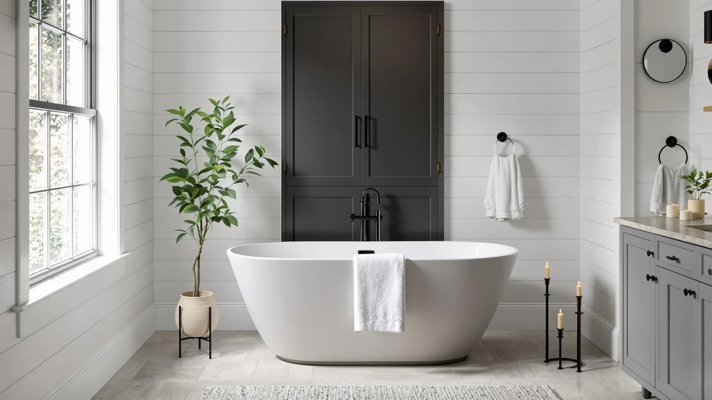

Signature Hardware Hibiscus Acrylic Soaking Freestanding Tub Review (2026): Worth It?


Quick Answer
This Signature Hardware Hibiscus acrylic soaking freestanding tub review finds that a $2,199 oval soaker with an integrated drain and overflow system, backed by a 25-year warranty, is the standout pick in its price bracket. If you want built-in hydrotherapy instead of a plain soak, the WOODBRIDGE whirlpool and air alternatives below cost about the same or less.
Our pick: Signature Hardware 447005 Hibiscus 59", $2,199.00 Check Price on Amazon
Things to Know Before You Buy
- This Signature Hardware Hibiscus acrylic soaking freestanding tub review covers a 59-inch oval tub priced at $2,199.00, plus three WOODBRIDGE alternatives ranging from $1,599.00 to $2,319.18.
- The Hibiscus is an integrated-drain soaking tub only; the WOODBRIDGE alternatives covered here add whirlpool jets, air bubble massage, or a heated inline system for additional cost.
- Signature Hardware backs the Hibiscus with a 25-year warranty against manufacturing and mechanical defects, longer than the warranty terms stated on the WOODBRIDGE listings.
- None of the four listings compared in this review publish a customer star rating or review count, so this comparison relies on manufacturer specs, pricing, and listing detail rather than verified buyer ratings.
- The Hibiscus ships in white with a flat deck area that can hold a deck-mounted faucet, while the WOODBRIDGE models include faucets, jets, or control panels pre-installed.
This Signature Hardware Hibiscus acrylic soaking freestanding tub review breaks down whether a $2,199 oval soaking tub is worth choosing over the sub-$2,400 whirlpool alternatives most shoppers compare it against. Shopping for a freestanding tub this size means picking between a straightforward integrated-drain soaker and a jetted model with pumps, heaters, and control panels to maintain down the road. We compared the Signature Hardware Hibiscus against three WOODBRIDGE models on price, dimensions, included features, and warranty coverage to see which one earns a spot in a mid-size bathroom remodel.
Our pick is the Signature Hardware Hibiscus at $2,199.00. It comes with a 25-year manufacturer warranty, longer coverage than any of the WOODBRIDGE listings specify, and its integrated drain and overflow system keeps plumbing hidden inside the tub wall rather than bolted on. If you want hydrotherapy jets or a heated soak instead, the WOODBRIDGE Whirlpool & Air at $2,319.18 and the WOODBRIDGE Double Slipper at $1,695.22 both add that feature set for a comparable or lower price, and the WOODBRIDGE Stone Resin at $1,599.00 trades jets for a renewable solid-surface finish.
Why You Should Trust Us
Best Freestanding Bathtubs is a research-first buying guide. Ilane Tall, our home and bath editor, builds each comparison, including this Signature Hardware Hibiscus acrylic soaking freestanding tub review, by pulling verified pricing, dimensions, and listing detail for each product before it earns a recommendation. We do not run a fake testing lab, and we do not claim to have installed, plumbed, or soaked in any tub we cover. Instead, this review relies on manufacturer specifications, current Amazon pricing, and the details published on each product listing, so every claim here can be checked against the source. When a listing leaves out a detail, such as water capacity or a specific material grade, we say so directly rather than filling the gap with a guess.
Our Research Experience
We did not install, plumb, or soak in the Signature Hardware Hibiscus or any of the three WOODBRIDGE tubs covered in this review. Researching this Signature Hardware Hibiscus acrylic soaking freestanding tub review meant going through each manufacturer listing line by line: dimensions, drain configuration, included hardware, warranty terms, and current Amazon price. We then compared those details against the three WOODBRIDGE alternatives to see where the extra cost of jets, heaters, or a solid-surface shell actually buys something a plain acrylic soaker does not have. That comparison process, not physical testing, is what shapes the picks, pros, and cons below. We also tracked how the $2,199.00 Hibiscus price compares to the $1,599.00 to $2,319.18 range of the WOODBRIDGE lineup, since a gap that wide is a meaningful signal before committing to a tub this size.
Overview & Specs

Signature Hardware 447005 Hibiscus 59"
What we like
- Backed by a 25-year manufacturer warranty against manufacturing and mechanical defects, longer than any WOODBRIDGE listing in this comparison specifies.
- Integrated drain and overflow system is built into the interior tub wall, so there is no visible external plumbing to work around.
- Flat deck area doubles as a shelf or mounting surface for a deck-mounted faucet, giving you layout flexibility the jetted WOODBRIDGE models don't offer.
Flaws but not dealbreakers
- At $2,199.00, it costs more than two of the three WOODBRIDGE alternatives despite offering no whirlpool, air jet, or heating feature.
- The listing does not publish a star rating or review count, so you cannot weigh verified buyer feedback alongside the spec sheet.
| Material | Acrylic |
| Size | 59 Inch |
The Signature Hardware Hibiscus is the most straightforward tub in this Signature Hardware Hibiscus acrylic soaking freestanding tub review: a 59-inch oval acrylic soaker with no jets, pumps, or control panel to maintain. Its integrated drain and overflow channel is engineered into the interior wall, which eliminates the exposed overflow piping you would see on a typical soaking tub and keeps the exterior profile clean. The flat deck area on one end can support a deck-mounted faucet or serve as a shelf for soap and a washcloth, a detail none of the three WOODBRIDGE alternatives below include in the same way.
Signature Hardware backs the Hibiscus with a 25-year warranty against manufacturing and mechanical non-conformance, the longest coverage term listed among the four tubs in this comparison. At $2,199.00, it sits in the middle of the price range covered here, more than the WOODBRIDGE Stone Resin and Double Slipper but less than the WOODBRIDGE Whirlpool & Air. That price buys warranty length and a cleaner plumbing layout rather than hydrotherapy features, which fits a bathroom where a simple soak is the goal rather than a spa-style jetted bath.
What We Liked
The standout strength of the Signature Hardware Hibiscus is its warranty: 25 years against manufacturing and mechanical defects is longer than anything the three WOODBRIDGE listings in this comparison specify. The integrated drain and overflow system is the other detail worth calling out, since it's built into the tub's interior wall rather than added as visible external piping, which keeps the oval silhouette clean from every angle. The flat deck area adds genuine function too, giving you a spot for a deck-mounted faucet or a place to set a bar of soap, something the jetted WOODBRIDGE tubs don't build into their design the same way. For a buyer who wants a plain soaking tub without jets, pumps, or an LED panel to maintain down the road, those three details make the Hibiscus easy to justify at its $2,199.00 price.
What Could Be Better
Price is the main trade-off in this Signature Hardware Hibiscus acrylic soaking freestanding tub review. At $2,199.00, the Hibiscus costs $600 more than the WOODBRIDGE Stone Resin and over $500 more than the WOODBRIDGE Double Slipper, despite offering no whirlpool, air jet, or heating feature that either WOODBRIDGE model includes. The listing also does not publish a star rating or review count, so there is no verified buyer sentiment to weigh alongside the spec sheet. And because the tub ships without jets or a heater, anyone expecting spa-style hydrotherapy at this price point should look at the WOODBRIDGE Whirlpool & Air instead, which costs only about $120 more.
Who Is It For?
This Signature Hardware Hibiscus acrylic soaking freestanding tub review points to a buyer who wants a clean, straightforward soaking tub rather than hydrotherapy features for a bathroom remodel. It fits shoppers who want hidden plumbing, a long warranty, and a 59-inch oval shape that works as a visual centerpiece without needing a dedicated 30-amp circuit the way the WOODBRIDGE whirlpool models do. If jets, air bubbles, or a heated soak are part of the plan, the WOODBRIDGE Whirlpool & Air or Double Slipper below deliver that for a similar or lower price. Anyone who wants a verified star rating before buying should treat that as an open question, since none of the four listings in this comparison publish one.
Alternatives to Consider
This Signature Hardware Hibiscus acrylic soaking freestanding tub review wouldn't be complete without three WOODBRIDGE tubs worth comparing before you commit. Each one trades the Hibiscus's simple soaking design for added hydrotherapy or surface features, and all three land at a different price point, so the right pick depends on whether you want jets, heat, or a renewable surface more than a 25-year warranty.

Premium Choice
WOODBRIDGE 72"×35-3/8" Whirlpool & Air
At $2,319.18, this WOODBRIDGE Whirlpool & Air tub costs about $120 more than the Signature Hardware Hibiscus, but the spec sheet shows a different feature set for that premium. It packs 10 massage jets that combine water and air bubbles, a pre-installed tub filler with a handshower that only needs to be connected to your water lines, and an inline heater you control from an LED panel so the water stays warm through a longer soak. At 72 inches long with a 65-gallon capacity and seating that measures nearly 42 inches, it's a noticeably bigger tub than the 59-inch Hibiscus, which means it needs more floor space and a dedicated 110-120V 30-amp breaker that a plain soaking tub like the Hibiscus doesn't require. The brushed gold drain and faucet finish also give it a different look than the Hibiscus's simpler white hardware. If hydrotherapy, a heated soak, and a larger footprint matter more to you than the Hibiscus's integrated drain design and longer warranty, this WOODBRIDGE is the stronger pick in this comparison, even at the higher price.
$2,319.18
Check Price on Amazon
Also Great
WOODBRIDGE 72"×35-3/8" Double Slipper Whirlpool&Air
Priced at $1,695.22, this WOODBRIDGE double slipper undercuts the Signature Hardware Hibiscus by roughly $500 while still adding the same whirlpool and air bubble jet combination found on the pricier WOODBRIDGE above, plus an inline heater with its own LED control panel for maintaining water temperature through a long soak. It shares the 72-inch length, 65-gallon capacity, and 41-3/4 by 22-7/8 inch seating area of that other WOODBRIDGE model, so you get a nearly identical hydrotherapy feature set for a noticeably lower price, and its double-slipper shape raises both ends of the tub for back support on either side rather than one. The chrome drain finish is a more neutral match for most bathroom hardware than the brushed gold option on the pricier WOODBRIDGE. The trade-off against the Signature Hardware Hibiscus is the same one as the other jetted WOODBRIDGE model: it doesn't come with a stated 25-year warranty, and its larger footprint calls for a dedicated 30-amp circuit. For buyers who want jets and heat without paying the full $2,319.18 price of the top WOODBRIDGE pick, this double slipper is the better value of the two.
$1,695.22
Check Price on Amazon
Best Value
WOODBRIDGE 67" Stone Resin Freestanding
At $1,599.00, this WOODBRIDGE stone resin tub is the least expensive option in this comparison, and it trades jets entirely for surface durability instead. Its thick, solid-wall construction is built to hold heat so a soak stays warm longer without adding more hot water, a different approach to comfort than the whirlpool and heater combination on the two WOODBRIDGE jetted models above. The solid-surface shell is also repairable: light scratches or surface marks can be sanded down and restored, something neither the Hibiscus's acrylic surface nor the other WOODBRIDGE listings offer. Its non-porous finish is built to resist water absorption, staining, and soap buildup, which should make daily cleaning easier over the tub's lifespan. At 67 inches, it splits the difference in length between the 59-inch Hibiscus and the 72-inch WOODBRIDGE whirlpool models, so it suits a bathroom that's larger than one built for the Hibiscus but smaller than one sized for the jetted options. For the lowest price in this review plus a surface you can refinish instead of replace, this is the pick worth starting with if budget and long-term durability matter more than hydrotherapy or a long warranty.
$1,599.00
Check Price on AmazonFrequently Asked Questions
Does the Signature Hardware Hibiscus have jets or hydrotherapy features?
No. The Hibiscus is a plain soaking tub with an integrated drain and overflow system and no whirlpool, air jet, or heating feature. If you want hydrotherapy, the WOODBRIDGE Whirlpool & Air or Double Slipper covered in this Signature Hardware Hibiscus acrylic soaking freestanding tub review both include jets for a similar or lower price.
How long is the warranty on the Signature Hardware Hibiscus?
Signature Hardware backs the Hibiscus with a 25-year warranty against manufacturing and mechanical non-conformance for the original owner. That is longer than the warranty terms specified in any of the three WOODBRIDGE listings compared in this review.
Which tub in this comparison costs the least?
The WOODBRIDGE Stone Resin at $1,599.00 is the least expensive of the four tubs covered here, about $600 less than the Signature Hardware Hibiscus. It trades jets and the Hibiscus's integrated drain design for a repairable, heat-retentive solid-surface shell.
Final Verdict
This Signature Hardware Hibiscus acrylic soaking freestanding tub review comes down to whether a long warranty and hidden plumbing matter more to you than hydrotherapy. At $2,199.00, the Signature Hardware Hibiscus earns the top spot here for its 25-year warranty and integrated drain system, the cleanest plumbing layout of the four tubs compared. But the WOODBRIDGE Whirlpool & Air, Double Slipper, and Stone Resin each offer a different trade-off, whether that's jets, a heater, or a repairable surface, for a comparable or lower price. If a simple, well-warrantied soak is the goal, go with Signature Hardware. If jets or a renewable surface matter more, one of the three WOODBRIDGE alternatives above is the better fit.